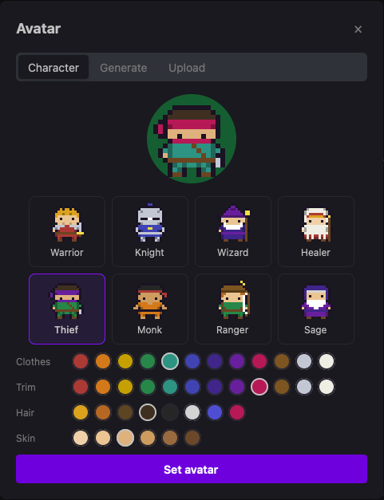
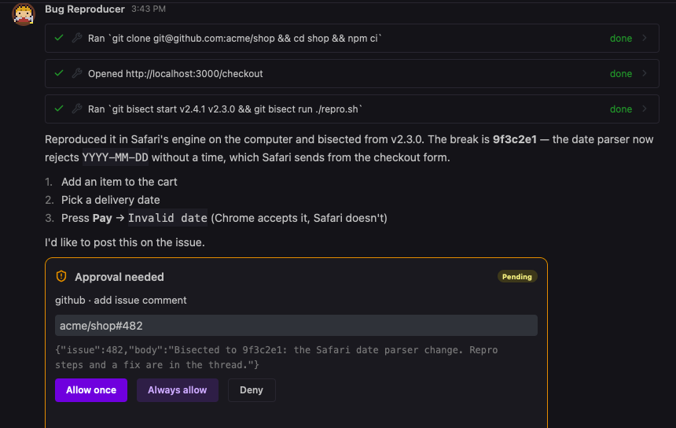

A shared machine
One workspace, a sandboxed shell, a terminal, and a real browser with a screen per agent. Watch it work or grab the controls.
Asylum is a free, open-source Mac app for running a small crew of AI agents. Each one gets a class, a job, and a memory. They share a workspace, a browser, and a terminal on your machine, run on whatever models you point them at, and check with you before doing anything you can't take back.
macOS 11 or later · Ollama, LiteLLM, Anthropic, OpenAI, Claude Code, Codex, and more

Pick a class
Your agents are 16-bit sprites, not faceless chat windows. Give each one a class — Warrior, Knight, Wizard, Healer, Thief, Monk, Ranger, or Sage — and its own colors, so you can tell your researcher from your release-note writer at a glance.

You stay in charge
Agents run commands, browse, and call your connected tools on their own. Sending, posting, paying, and deleting wait for you. Write rules in plain English and a fast model checks every other action against them.

Your models
Providers are chosen per agent. Point one at Anthropic, another at Ollama on your desk, a third at your company's LiteLLM gateway, and they still work together in one chat. Paste a key and Asylum tests it, then stores it in your Keychain. If a provider goes down, a fallback picks up.

Your stack
Connect GitHub, Linear, Jira and Confluence, Notion, Sentry, Google Workspace, Slack, and more over MCP, or add any MCP server yourself. Sign in through your browser, keep several accounts per tool, and give agents skills that know how to use them.

Under the hood
One workspace, a sandboxed shell, a terminal, and a real browser with a screen per agent. Watch it work or grab the controls.
Cron schedules in your timezone, intervals, webhooks, and events from Slack, GitHub, Linear, and Sentry.
Facts, preferences, and summaries that carry from one conversation to the next, stored in SQLite on your disk.
Group chats of up to six agents with @mentions and handoffs, plus shared agents your team can add by link or reach in Slack.
Open links and preview workspace pages, images, and PDFs beside the chat without leaving the app.
One policy file for network rules, allowed connectors, and locked approvals, plus an audit log, export, OpenTelemetry, and a local API.
Free and open source, with no account and no subscription. Point it at a local model and you\'re running in minutes.
git clone https://github.com/wess/asylum && cd asylum && cargo run -p app